At TheKlab, I created web and mobile platforms for an app called Saleslog. For both platforms, I worked to create a seamless interface that provides learning opportunties for sales representatives. Additionally, I conducted preliminary research to support the intervention and design decisions such as user flow, microinteractions, and prototyping.
TheKlab
TheKlab specializes in B2B sales/marketing consulting. The company studies knowledge curation and data information to provide a strong networking, easy accessibility for individuals within the department, and opportunity for new knowledge through connections.
Project Brief
Saleslog provides Business to Business Sales (B2B) and marketing management for sales representatives. It is a tool that supports collaboration and data documentation in order to further enhance networking within the team and the customers. With the use of AI, Saleslog collects report documentation and data to categorize into specific needs and problems.
Research
01. sales have become more difficult in recent years because of the changes in technology and Covid.
02. sales are the process of persuasion and effort from one person to one person or one person to a corporation.
03. businesses didn't suddenly discover e-commerce when COVID forced them to adapt their operations.
Problem
Due to the changes such as contact-free and social distancing regulations in the business workplace, the business method must change from the past.
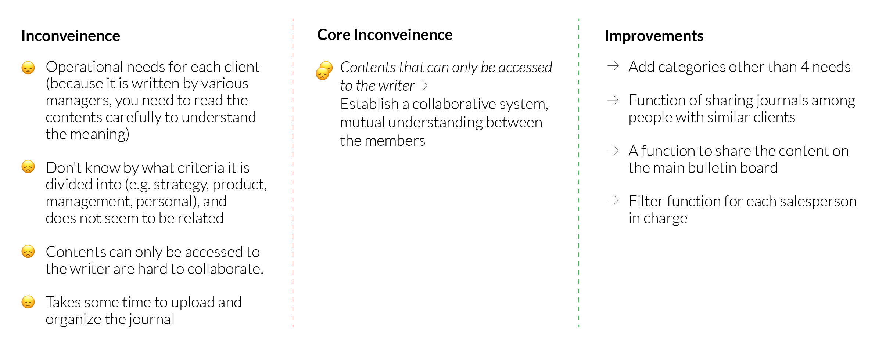
Deliverable
How can I create design solutions for such changes in the sales strategy and maintain strong relationship with the customers and encourage motivation within salespeople?
User Type
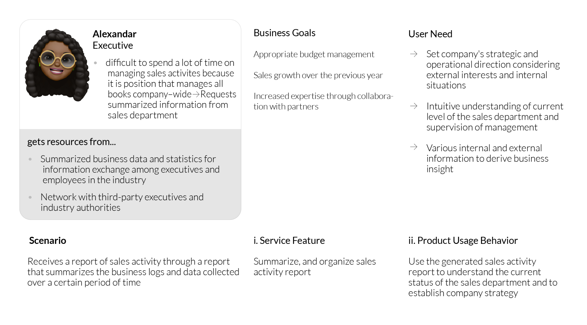
User Journey
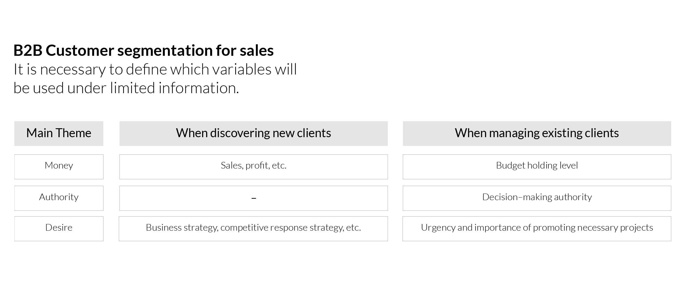
Competitive Analysis
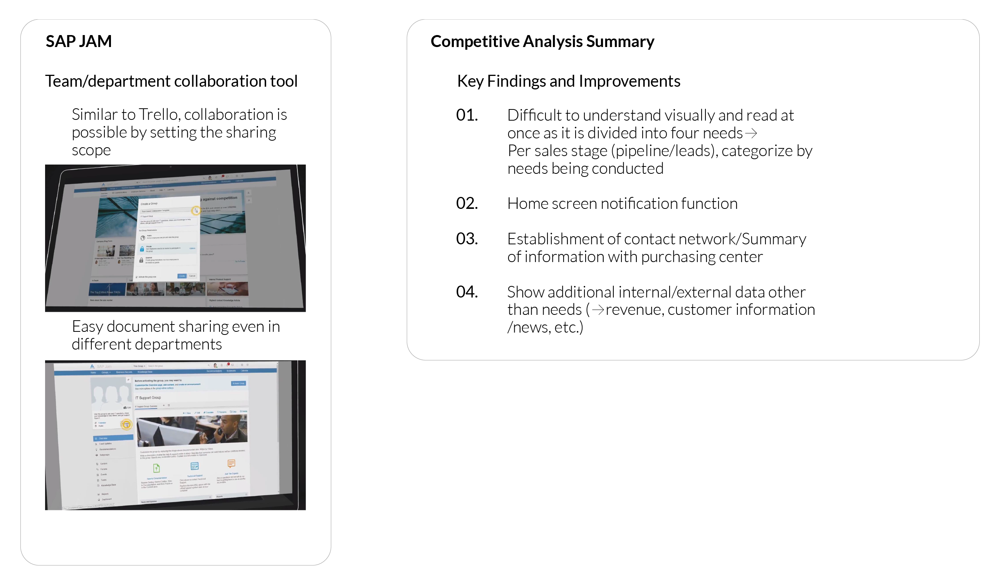
Interaction Model
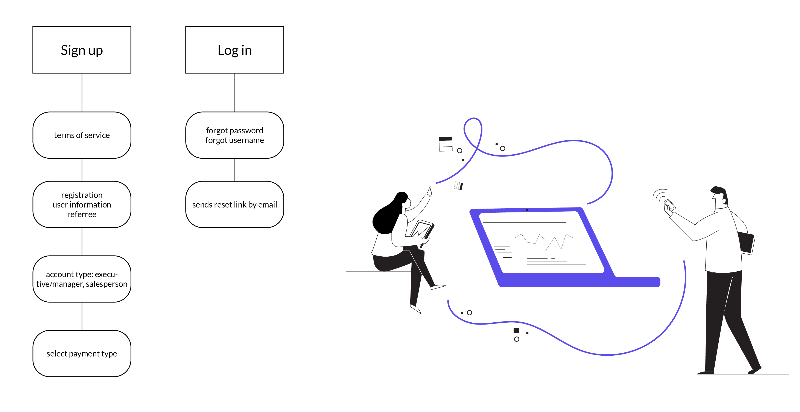
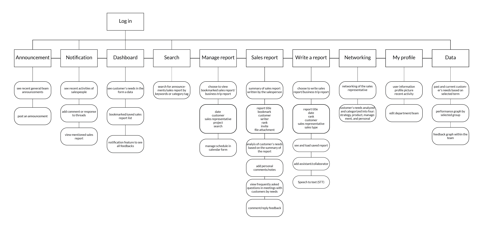
Styleguide
Log in/ Sign Up
Store your documentation
Encourage salespeople to document what they’ve learned from the customers in the “Sales Report” entry, which is designed to put their learnings into written form. STT (speech to text) provides an easier input method in different working environments.
Give feedback and gain knowledge
Feedbacks within the team encourages more collaboration and engagement. The salesperson will have the opportunity to have targeted support and utilize FAQ in customer meetings. The manager will be able to observe and assess the salesperson’s progress.
Track team/your progress
Salespeople and managers can see current and past progress, activity, and breakthrough entries to utilize past documentation. By integrating customer’s needs into a trackable form of a bar graph, the team will be able to prepare for specific needs to close the deals. With knowledge of their progress, the manager will be able to aid salespeople in making reasonable goals for project check-ins.
Reflection
Our client companies particularly liked the notification feature and the redesign of the interface. They liked how the web and mobile interfaces are consistent with one another considering the age group of their users.


 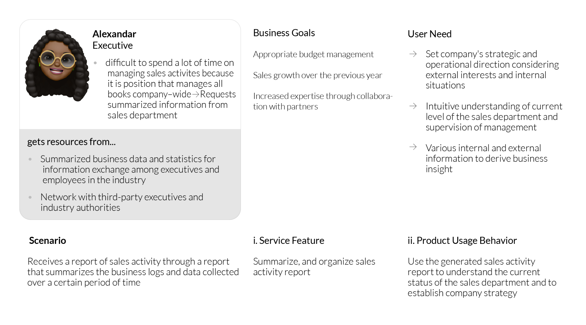
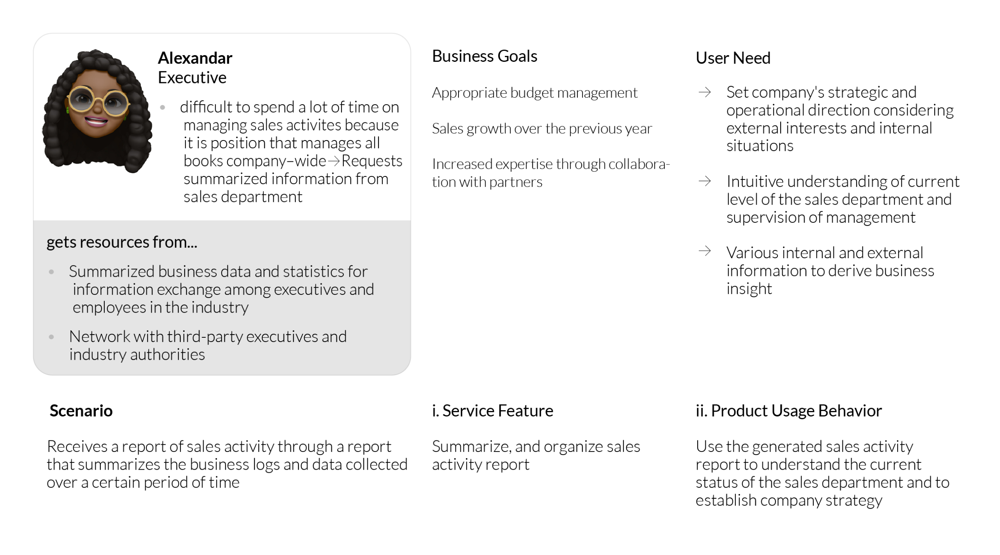
 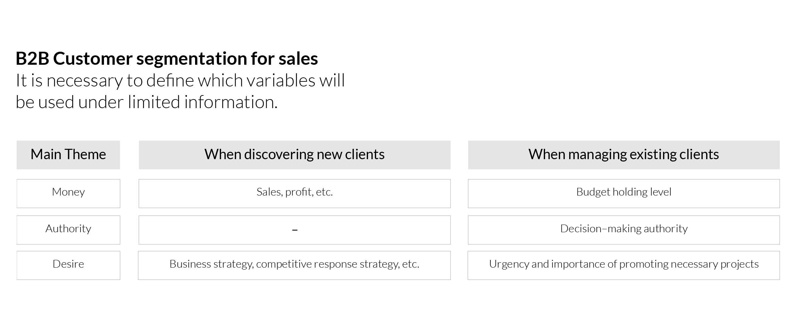
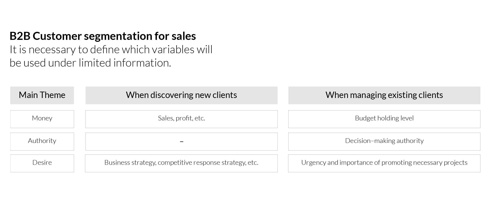
 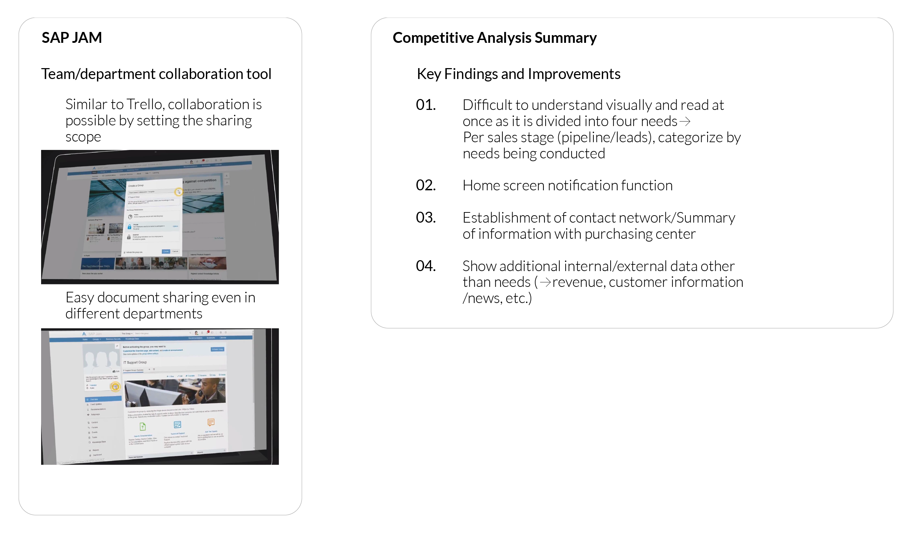
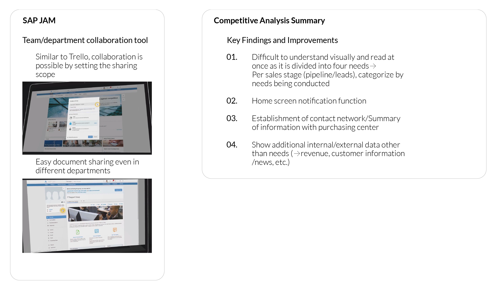